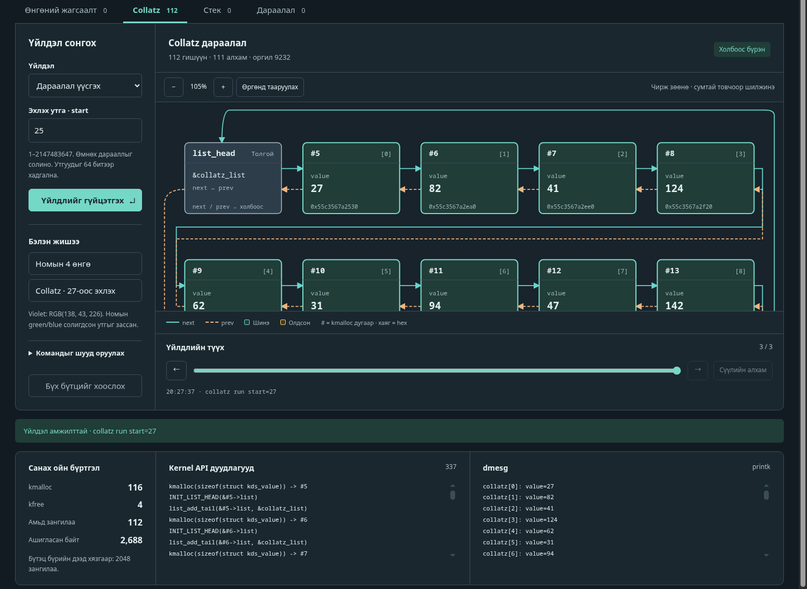
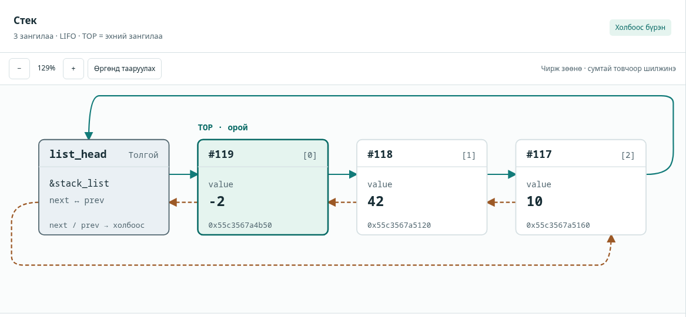
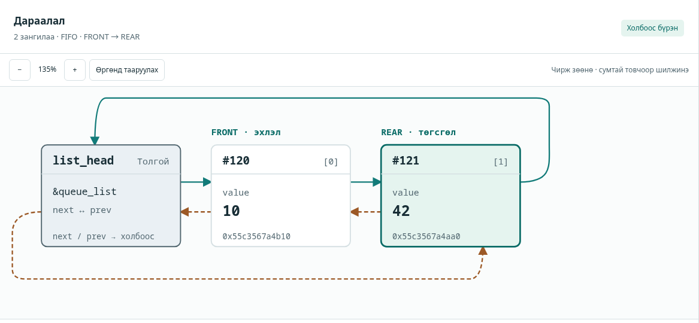
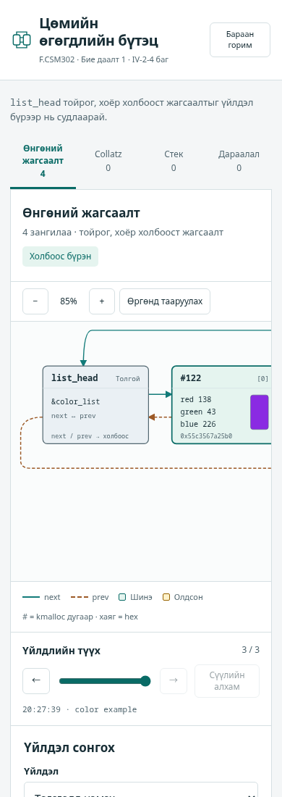

color example — номын 4 өнгө. Толгойноос #1 (violet 138, 43, 226) → #2 → #3 → #4 → толгой руу next (тасралтгүй, төгсгөл дэх нум), prev (тасархай, нөгөө нум). Тоолуур: kmalloc 4, kfree 0, амьд 4, 128 байт. dmesg нь хүснэгт 8.2-той адил.| Хуваарилалтын код | IV-2-4 |
| Төсөл | Kernel Data Structures (circular doubly linked list, struct list_head) |
| Үндсэн UI дүрслэл | Kernel structure graph |
| GitHub | [GitHub холбоос] |
| Огноо / хувилбар | 2026-10-28 · 1.0 |
| № | Оюутны код | Нэр |
|---|---|---|
| 1 | B200900028 | [нэр] |
| 2 | B221910021 | [нэр] |
| 3 | B231910034 | [нэр] |
| 4 | B232270805 | [нэр] |
| 5 | B241940102 | [нэр] |
| 6 | B242270075 | [нэр] |
.ko бүтээж, insmod хийж туршаагүй (9.2-ыг үз).Асуудал. Сурах бичгийн 3-р бүлгийн Programming Project 4 нь Linux kernel-ийн дугуй хоёр чиглэлт холбоост жагсаалтыг (struct list_head) ашиглан (I) 4 өнгөний жагсаалт үүсгэж, dmesg-д хэвлэж, гарахдаа чөлөөлөх, (II) start параметртэй collatz module-д Collatz дарааллыг kernel жагсаалтад хадгалахыг шаарддаг. Багшийн даалгаврын дагуу үйлдэл бүрийн дараах бүтцийг Kernel structure graph хэлбэрээр интерактив харуулах ёстой.
Шийдэл. Энэ компьютерт kernel header байхгүй тул module-ийн жинхэнэ эх кодыг (src/kernel/color_list.c, collatz.c) өөрсдийн user-space linux/*.h shim-тэй өөрчлөлтгүйгээр хөрвүүлж ажиллуулдаг болгосон. Ижил жагсаалтын API дээр суурилсан C engine нь stdin-ээр команд авч, нэг мөр JSON хариу өгнө; python3 сервер ба SVG-д суурилсан вэб UI нь зөвхөн энэ бодит төлөвөөс графыг зурна.
Туршилт. make test нь 4 C тест, 9 JSON сценарийн бүлэг, 11 HTTP тестийг ажиллуулдаг; бүгд AddressSanitizer + UndefinedBehaviorSanitizer-тэй.
kds_verify барьсанГол үр дүн. make test эцсийн мөр: All available tests passed. Номын жишээ (4 өнгө) болон Collatz 27 (112 зангилаа), 837799 (525 зангилаа) зөв гарсан; kmalloc = kfree бүх тестэд. Номын snippet-д violet өнгө blue=43, green=226 гэж RGB (138, 43, 226)-г struct-ийн талбарын дараалалтай андуурсан тул зөв утгыг (red=138, green=43, blue=226) ашигласан.
Хязгаарлалт. Жинхэнэ kernel-д .ko бүтээж, insmod/dmesg-ээр ажиллуулаагүй; зөвхөн жинхэнэ module эх код shim дээр ажилласан.
Үйлдлийн системийн kernel өөрийн өгөгдлийн бүтцүүдийг (жагсаалт, стек, дараалал, мод, hash, bitmap) өөрөө удирддаг. Linux нь <linux/list.h>-д дугуй хоёр чиглэлт холбоост жагсаалтыг зангилаа дотор нь шигтгэх (embedded) аргаар өгдөг. Бидний зорилго нь энэ бүтцийг номын даалгаврын дагуу хэрэгжүүлж, үйлдэл бүрийн дараа заагчид яг юу болдгийг (next/prev, kmalloc/kfree) нүдээр харж, өөр өгөгдлөөр дахин турших боломжтой болгох явдал юм.
list_head шигтгэх арга нь Linux-ийн процессийн жагсаалт, ажлын дараалал (run queue), санах ойн удирдлага зэрэгт өргөн хэрэглэгддэг; үүнийг ойлгох нь kernel код унших үндэс.next/prev, memory leak, use-after-free) нь kernel-д хамгийн аюултай алдаа тул kds_verify invariant шалгагч болон sanitizer-тэй туршсан.| Хамрагдсан | Хамрагдаагүй |
|---|---|
|
|
Эх сурвалж: Operating System Concepts, 10-р хэвлэл, 3-р бүлгийн «Project 4 — Kernel Data Structures» (P-19…P-22) ба Exercise 3.21 (Collatz). Шаардлага бүрийг хэрэгжилт, нотолгоотой нь дор харууллаа.
| № | Номын шаардлага | Хэрэгжилт | Нотолгоо (тест) |
|---|---|---|---|
| 1 | struct color {int red; int blue; int green; struct list_head list;} | src/kernel/color_list.c, мөр 6 | test_color_module |
| 2 | static LIST_HEAD(color_list); | мөр 7 | ижил |
| 3 | Module-ийн entry-д 4 struct color: kmalloc + INIT_LIST_HEAD + list_add_tail | мөр 16–34 | 4 зангилаа, дараалал нь тестэд яг шалгагдсан |
| 4 | list_for_each_entry-ээр гүйлгэж kernel log-д хэвлэх (dmesg) | мөр 35–37 (printk) | printk гаралт байтаар таарсан (8.2) |
| 5 | Exit-д list_for_each_entry_safe + list_del + kfree | мөр 8–15 | live == 0, kmalloc == kfree |
| 6 | Part II: collatz module, start параметр (module_param(start, int, 0)), default 25 | src/kernel/collatz.c | default 25 → 24 зангилаа |
| 7 | Collatz дарааллыг kernel жагсаалтад хадгалж, хэвлэж, exit-д чөлөөлөх | collatz_init, collatz_exit | 7 лавлагаа, 1,250 ENOMEM байрлал |
| 8 | Exercise 3.21: n тэгш → n/2, сондгой → 3n+1, 1 хүртэл | value & 1, value >>= 1, 3*value+1 | Python-оор бие даан тооцсон дараалалтай бүрэн таарсан |
| 9 | Багшийн UI: Kernel structure graph (нэмэх, устгах, хайх → граф) | src/ui/static/* + engine | 8.4–8.5, Manual 8.1 |
БД1 Guide-ийн нийтлэг шаардлагууд (3-р хэсэг): оролт/параметр өөрчилж дахин турших (UI-н форм, ?run=, inject_fail, --max-nodes); буруу/захын оролтыг ойлгомжтой мэдээлэх (E_* кодууд, хүснэгт 7); өөрсдийн нэмэлт тест (tests/); Manual-ын дагуу дахин ажиллуулах.
Массивын элементэд шууд хандаж болдог бол жагсаалтын элементэд тодорхой дарааллаар хандана. Холбоост жагсаалт нь singly (элемент бүр залгамжлагчаа заана), doubly (өмнөх ба дараагийнхаа заагчтай), circular (сүүлийн элемент эхнийхээ заана, null байхгүй) гэсэн хэлбэртэй. Жагсаалтаас тодорхой утга хайх нь O(n). Стек нь LIFO (push/pop), дараалал нь FIFO; kernel-д жагсаалтаар стек, дараалал байгуулдаг. Манай stack нь list_add (толгойд), queue нь list_add_tail ашигладаг.
list_headLinux өгөгдлийн зангилаанд заагч хадгалуулах биш, харин struct list_head-ийг зангилааны дотор шигтгэдэг. Тиймээс нэг жагсаалтын код ямар ч struct-д ажиллана. Зангилааг заагчаас олохдоо list_entry(ptr, type, member) = (type *)((char *)ptr − offsetof(type, member)) томьёо ашиглана.
list_head нь struct color дотор шигтгэгдсэн; list_entry нь list талбарын заагчаас зангилааны эхлэлийг олно.| Үйлдэл | Kernel API | Хугацаа |
|---|---|---|
| Толгойд нэмэх / төгсгөлд нэмэх | list_add / list_add_tail | O(1) |
| Заагдсан зангилааг устгах | list_del (+kfree) | O(1) |
| Утгаар хайх, гүйлгэх | list_for_each_entry | O(n) |
| Гүйлгэж байхдаа устгах | list_for_each_entry_safe (дараагийн заагчийг урьдчилан хадгална) | O(n) |
| Стек push/pop; дараалал enqueue/dequeue | list_add, list_add_tail, list_del | O(1) |
list_del нь устгасан зангилааны next/prev-ийг poison утгаар (LIST_POISON1/2) дарж, use-after-delete алдааг тэр дор нь илрүүлэхэд тусална (shim-д мөн адил).
Эерэг бүхэл n-ээс эхлээд: n тэгш бол n/2, сондгой бол 3n+1; n = 1 болтол. Collatz таамаглал: дараалал үргэлж 1-д хүрнэ (батлагдаагүй). Дарааллын урт урьдчилан мэдэгдэхгүй тул kernel жагсаалтад хадгалахад тохиромжтой жишээ. Оргил утга хурдан өсдөг: 837799 (525 зангилаа) нь 2,974,984,576-д хүрэх ба энэ нь int32-ийн дээд хязгаар 2,147,483,647-оос их; start = 2147483647 үед оргил 1,235,346,792,567,892 (< 263−1). Тиймээс бид зангилааны утгыг 64 битээр хадгалж, 3n+1-ийн overflow-г шалгадаг.
list.h/kmalloc shim-ийг ашигладаг тул граф дахь заагч нь module-ийн кодын заагчтай ижил механизмаар үүснэ.Өгөгдлийн урсгал (нэг үйлдэл):
app.js нь color add_tail red=1 green=2 blue=3 хэлбэрийн команд үүсгэнэ.POST /api/cmd {"cmd":"…"} — сервер Content-Type, биеийн хэмжээ (≤ 4096 B), нэг мөр ≤ 512 B, Origin шалгана.kds_engine процессийн stdin-д мөрийг бичиж, нэг JSON мөр хүлээнэ (lock, 5 с timeout, үхсэн бол автоматаар дахин асаана).kmalloc/list_add_tail/list_del/kfree зэргийг үнэхээр дуудаж, ops, log, effect, state бүхий JSON гаргана.state-ээс зангилаа, сум, тоолуурыг зурна; өмнөх алхмуудыг history-д хадгална.Нэг команд = нэг мөр; нэг хариу = нэг мөр JSON. Команд нь key=value токенуудтай (жишээ нь color insert index=1 red=10 green=20 blue=30). Хариуны бүтэц:
| Талбар | Агуулга |
|---|---|
ok, cmd, msg | амжилт, команд, тайлбар |
ops | бодитоор дуудсан kernel API-ууд, жишээ нь kmalloc(sizeof(struct color)) -> #1, list_add_tail(->list, &color_list) |
log | printk-ийн мөрүүд (dmesg-д харагдах зүйл) |
effect | added, removed, visited (гүйлгэсэн дараалал), matched — kmalloc-ийн дугаараар |
state.structures[] | бүтэц бүрийн count, invariant, head, nodes[] (id, addr, index, fields, next, prev) |
state.kmalloc | allocs, frees, live, live_bytes |
error (алдааны үед) | code (E_SYNTAX, E_UNKNOWN_CMD, E_UNKNOWN_ARG, E_MISSING_ARG, E_BAD_VALUE, E_RANGE, E_NOT_FOUND, E_EMPTY, E_FULL, E_NOMEM) ба message |
Зангилаа бүрийн next/prev нь жинхэнэ заагчаас тайлагддаг: "head", зангилааны kmalloc дугаар, эсвэл бүртгэлд байхгүй бол "?". Иймээс жагсаалт эвдэрвэл UI-д улаан тэмдэгтэй харагдана.
kds_verify — холбоосын хязгаартай (bounded) алхалтаар: head->next гинж head-д буцаж ирэх, зангилаа бүрт next->prev == node ба prev->next == node, урагш/хойш тоо = бүртгэлтэй тоо, poison заагч байхгүй. Эвдэрсэн жагсаалтад ч гацахгүй, crash хийхгүй.E_FULL, E_NOMEM) төлөв болон санах ойн тоолуур өөрчлөгдөхгүй. Түр аллокацийг буцаасан тул kmalloc дугаарт зай гарч болно.reset — 4 бүтцийг бүгдийг чөлөөлж, ENOMEM тарилгыг унтраана; хуримтлагдсан allocs/frees тоолуур хэвээр үлдэнэ.live != 0 бол stderr-д LEAK: live=N, exit code 3.| Шийдвэр | Шалтгаан |
|---|---|
| Module-ийг user-space shim дээр өөрчлөлтгүй хөрвүүлэх | Kernel header байхгүй; ингэснээр жинхэнэ module код (printk гаралт, алдааны зам) автоматаар туршигддаг. |
Engine нь module-тэй ижил list.h/kmalloc-г хэрэглэх | Граф нь «зурсан загвар» биш, бодит заагчаас гарсан байх (Guide 5: UI бодит төлөвтэй нийцэх). |
| Төлөвийг C процесст, history-г браузерт хадгалах | Үнэн хэмжээний төлөв нэг газарт; өмнөх алхам нь зөвхөн унших snapshot. |
| python3 стандарт сан, 127.0.0.1, офлайн UI | Суулгалт шаардахгүй; Manual-аар өөр компьютерт дахин ажиллуулахад хялбар; гадаад сүлжээ шаардахгүй. |
C (-std=gnu11 -Wall -Wextra -Werror), GNU make, python3 (зөвхөн стандарт сан: http.server, subprocess, threading, json, unittest), цэвэр JavaScript + inline SVG (framework, CDN, web font байхгүй). Гуравдагч талын сан ашиглаагүй.
| Зам | Үүрэг | Мөр |
|---|---|---|
src/shim/linux/*.h (7 файл) | kernel header-ийн shim; list.h өөрийн хэрэгжилт (38) | 86 |
src/shim/kshim.{h,c} | kmalloc/kfree, тоолуур, ENOMEM тарилга, printk sink, module/param бүртгэл | 106 |
src/kernel/{color_list.c,collatz.c,Makefile} | Жинхэнэ kernel module-ууд + Kbuild | 107 |
src/engine/{kds_core.{h,c},main.c} | Команд задлагч, 4 бүтэц, kds_verify, JSON гаралт | 406 |
src/ui/server.py | HTTP сервер, engine-ийн менежер | 260 |
src/ui/static/* | UI (HTML, CSS, JS) | 514 |
Makefile | make, test, run, module, clean (sanitizer-тэй тестийн build) | 73 |
tests/*.c|py|h | Unit, differential, case, server тест | 1,303 |
tests/ui/*.py | Браузерийн (CDP) шалгалт; make test-д ороогүй | 270 |
color_list.cНомын алхмуудыг мөр мөрөөр дагасан. Violet өнгийг зөв (red=138, green=43, blue=226) оруулсан; номд blue=43; green=226 гэсэн нь struct-ийн талбарын дараалал (red, blue, green)-тай RGB (138, 43, 226)-г андуурсан алдаа.
struct color { int red; int blue; int green; struct list_head list; };
static LIST_HEAD(color_list);
static void color_list_exit(void)
{
struct color *entry, *next;
list_for_each_entry_safe(entry, next, &color_list, list) {
list_del(&entry->list);
kfree(entry);
}
}
static int __init color_list_init(void)
{
/* Correct violet RGB; the book interchanges green/blue field order. */
static const int rgb[4][3] = {{138, 43, 226}, {255, 0, 0}, {0, 255, 0}, {0, 0, 255}};
struct color *entry;
int i;
for (i = 0; i < 4; ++i) {
entry = kmalloc(sizeof(*entry), GFP_KERNEL);
if (!entry) {
color_list_exit();
printk(KERN_ERR "color: kmalloc failed\n");
return -ENOMEM;
}
entry->red = rgb[i][0];
entry->green = rgb[i][1];
entry->blue = rgb[i][2];
INIT_LIST_HEAD(&entry->list);
list_add_tail(&entry->list, &color_list);
}
i = 0;
list_for_each_entry(entry, &color_list, list)
printk(KERN_INFO "color[%d]: red=%d, green=%d, blue=%d\n", i++, entry->red, entry->green, entry->blue);
return 0;
}collatz.cstart < 1 үед -EINVAL. Kernel-д 64 битийн хуваалт хэрэглэхгүй тул value & 1, value >>= 1 ашигласан; (~0 − 1) / 3 нь хөрвүүлэх үеийн тогтмол. Аллокаци амжилтгүй болвол өмнө авсан бүгдийг чөлөөлж -ENOMEM буцаана.
static int __init collatz_init(void)
{
u64 value;
unsigned int index = 0;
struct collatz_node *entry;
if (start < 1) {
printk(KERN_ERR "collatz: start must be positive\n");
return -EINVAL;
}
value = (u64)start;
for (;;) {
entry = kmalloc(sizeof(*entry), GFP_KERNEL);
if (!entry) {
collatz_exit();
printk(KERN_ERR "collatz: kmalloc failed\n");
return -ENOMEM;
}
entry->value = value;
INIT_LIST_HEAD(&entry->list);
list_add_tail(&entry->list, &collatz_list);
if (value == 1)
break;
if (value & 1) {
/* Compile-time constant division; no runtime 64-bit division. */
if (value > (~(u64)0 - 1) / 3) {
collatz_exit();
printk(KERN_ERR "collatz: unsigned 64-bit overflow\n");
return -EINVAL;
}
value = 3 * value + 1;
} else {
value >>= 1;
}
}
list_for_each_entry(entry, &collatz_list, list)
printk(KERN_INFO "collatz[%u]: value=%llu\n", index++, (unsigned long long)entry->value);
return 0;
}list.h-д list_head, LIST_HEAD, INIT_LIST_HEAD, list_add, list_add_tail, list_del (poison), list_empty, list_entry, list_first_entry, list_for_each_entry (+ _reverse, _safe)-ийг өөрсдөө бичсэн (Linux-ийн файлыг хуулаагүй). kshim.c-ийн kmalloc нь блок бүрт нууц толгой (magic, serial, хэмжээ) залгаж, шинэ санах ойг 0xA5-аар дүүргэн, allocs/frees/live/live_bytes тоолно; kfree нь чөлөөлсөн санах ойг 0xDD-ээр дарж, давхар/буруу kfree-г шууд abort-оор илрүүлнэ. kshim_fail_alloc_after(n) нь n амжилттай аллокацийн дараа ENOMEM буцаана.
Engine нь 4 бүтцийн (color, collatz, stack, queue) жагсаалтыг shim-ийн API-аар удирдаж, зангилаа бүрийг бүртгэлд (registry) хөтөлдөг; next/prev-ийг JSON-д гаргахдаа жинхэнэ заагчийг бүртгэлтэй тулгана. Гаралтын мөр бүр нэг JSON. --max-nodes N (1…100000, default 2048) нь бүтэц бүрийн зангилааны дээд хязгаар (E_FULL).
Сервер: зөвхөн 127.0.0.1-д сонсоно; статик файлыг src/ui/static-аас (path traversal, symlink-ээр гарахыг хаасан) өгнө; POST нь зөвхөн application/json, ≤ 4096 B, нэг мөр ≤ 512 B, Origin зөвхөн өөрийн хаяг; engine үхвэл дараагийн хүсэлтэд дахин асаана. Engine нь тусдаа session-д (start_new_session) ажилладаг тул терминалын Ctrl+C зөвхөн серверт хүрнэ; сервер engine-ийн stdin-ийг хааж EOF цэвэрлэгээ ба leak шалгалтыг ажиллуулсны дараа гарна (процессын бүлэгт SIGINT илгээж бодитоор шалгасан: engine exit 0, LEAK байхгүй, сервер exit 0).
4 таб (Өнгөний жагсаалт, Collatz, Стек, Дараалал); үйлдлийн форм (оролтын хязгаарыг сануулга болон HTML min/max-аар шалгана); SVG граф: list_head толгой + зангилаа бүрт индекс, #kmalloc дугаар, талбарууд, өнгөний бодит swatch, next (тасралтгүй) ба prev (тасархай) сум. Сүүлийн зангилаанаас толгой руу, толгойноос сүүлийн зангилаа руу тойргийн нум зурагдана; тодорхойгүй зорилт улаан ?; хоосон жагсаалтад толгой өөрөө өөрийгөө заана. Стект TOP, дараалалд FRONT/REAR шошго. Томруулах/жижигрүүлэх/өргөнд тааруулах, чирж зөөх, санах ойн тоолуур, Kernel API дуудлагууд, dmesg, invariant тэмдэг, алхамчилсан түүх (← →, дүрслэл унших горимтой), хайлтын замын анимаци (visited → matched), шинээр нэмсэн зангилааны тодруулга, устгасан kmalloc дугааруудын жагсаалт, light/dark горим. ?run=cmd1;cmd2 нь командыг автоматаар ажиллуулна.
Репозиторийн бүтэц Guide-ийн 6-р хэсгийн дагуу: README.md (нэр, код, зорилго, Quick Start, AI тэмдэглэл), src/, tests/, docs/ (Manual, Report, img/), Makefile. Нууц түлхүүр, нууц үг, хувийн өгөгдөл байхгүй (.gitignore нь build/, кэш, kernel build үлдэгдлийг хасна).
make test, sanitizer, headless browser-оор хийсэн.make test-ийг дахин ажиллуулж, тайлбарыг ойлгосны дараа энэ мэдэгдлийг баталгаажуулах ёстой [багийн баталгаа].list.h-ийг хуулаагүй — API-ийн нэр, семантикийг номын дагуу өөрсдөө хэрэгжүүлсэн. Бэлэн сан, framework, CDN, фонт ашиглаагүй.| Өөрчлөх зүйл | Хаана | Жишээ |
|---|---|---|
| Өнгөний утга, байрлал | UI → Өнгөний жагсаалт: нэмэх (эхэнд/төгсгөлд/индексийн дараа), устгах (индексээр, өнгөөр), хайх | red/green/blue 0…255, index 0-ээс |
Collatz start (module параметр) | UI → Collatz → «Дараалал үүсгэх» | 1…2147483647: 25, 27, 837799 … |
| Collatz дараалалд хайх/устгах | UI → «Утгаар хайх/устгах» | value=9232 (оргил) |
| Стек / дараалал | UI → Стек, Дараалал | push, pop, enqueue, dequeue, peek |
| Хязгаар, алдааны тарилга | --max-nodes; команд inject_fail after=N | E_FULL, E_NOMEM |
| Reset | «Бүх бүтцийг хоослох» (reset) | 4 бүтэц чөлөөлөгдөнө |
next/prev сумнууд шинэчлэгдэнэ; төгсгөл–толгойн нум дугуй бүтцийг харуулна.kmalloc нэмэгдэж, устгахад kfree нэмэгдэж, Амьд зангилаа = kmalloc − kfree хэвээр таарна.printk мөр.| Зүйл | Хувилбар (бодитоор ашигласан) |
|---|---|
| OS | Arch Linux, Linux 7.2.11-arch1-1 x86_64 |
| Compiler | gcc (GCC) 16.2.1 20260810, -std=gnu11 -Wall -Wextra -Werror, AddressSanitizer + UndefinedBehaviorSanitizer |
| Build | GNU Make 4.4.1 |
| Runtime | Python 3.14.8 (стандарт сан) |
| Browser (screenshot) | Brave 156.1.98.60 (headless) |
| Kernel header | байхгүй → жинхэнэ .ko бүтээгээгүй |
Хүлээгдсэн утгыг engine-ийн гаралтаас хуулаагүй: Collatz дарааллыг Python-ы дурын нарийвчлалтай бүхэл тооны n // 2 if n % 2 == 0 else 3*n+1-ээр бие даан тооцож (tests/reference_cases.py), номын мэдэгдэж буй утгатай (27 → 111 алхам, оргил 9232) тулгаж, C-ийн header болон JSON fixture үүсгэсэн. Жагсаалтын тестэд энгийн массив загвар (memmove) ашигласан. Тест бүрийн оролт, хүлээгдсэн үр дүн, гарал үүслийг tests/README.md хүснэгтээр баримтжуулсан.
| Төрөл | Файл | Юу шалгана |
|---|---|---|
| Unit + differential | tests/test_list.c | Өөрийн list.h; 5,000 санамсаргүй үйлдэл (seed 0x0c011a72) массив загвартай алхам бүрт адил, invariant, leak 0 |
| Бодит module | test_color_module.c, test_collatz_module.c | Жинхэнэ .c-г #include хийж kshim_run_init/exit; printk байтаар; kmalloc == kfree; ENOMEM-г байрлал бүрт |
| Engine core | tests/test_core.c | Бүх команд, дугаар, атомар алдаа, хязгаар, 512 байтын хил, kds_verify 10 эвдрэл |
| Сценари | tests/cases/*.in + *.expected.json, run_cases.py | Ном, нэмэх/оруулах/устгах/хайх, boundary/error, stack LIFO, queue FIFO, max-nodes, inject_fail, garbage |
| HTTP | tests/test_server.py | Статик MIME, 400 кейс, 512 хил, restart, path traversal, loopback bind, engine үхэх, 24 зэрэгцээ команд, процессын бүлэгт SIGINT илгээхэд цэвэр shutdown, офлайн |
make clean && make && make test # бүх тест; алдаатай бол 0-ээс өөр код
make run # UI: http://127.0.0.1:8080make testЦэвэр хуулбар дээр (build/ байхгүй) make && make test бүтэн ажиллах хугацаа ≈ 2.2 секунд (хөрвүүлэлт орсон), exit code 0. Гаралтаас:
| Багц | Гаралтын мөр | Үр дүн |
|---|---|---|
test_collatz_module | real Collatz module: default 25, 7 references, 1250 injected failures, 2 invalid starts; zero leaks | PASS |
test_color_module | real color module: exact printk, 4 colors, violet RGB, 4 ENOMEM positions + success boundary, no leaks | PASS |
test_core | core commands, IDs, atomic errors, limits, ENOMEM sweep, 512-byte boundary, 10 corrupt lists | PASS |
test_list | list: seed=0x0c011a72 operations=5000, invariants after every operation | PASS |
run_cases.py | CASES: 9 passed, 0 failed; 229 checked replies | PASS |
test_server.py | Ran 11 tests in 0.324s — OK | PASS |
Эхний мөр: Sanitizers: ASan + UBSan · Эцсийн мөр | All available tests passed. | |
color example командын log (бодит гаралт). Violet нь зөв (138, 43, 226); 4 зангилаа: kmalloc 4, kfree 0, амьд 4, 128 байт (зангилаа бүр 32 байт). Дараа нь color delete index=1: list_del(->list), kfree(#2) → 3 зангилаа, 96 байт.
color[0]: red=138, green=43, blue=226
color[1]: red=255, green=0, blue=0
color[2]: red=0, green=255, blue=0
color[3]: red=0, green=0, blue=255| start | Зангилаа | Алхам | Оргил | ENOMEM байрлал | Үр дүн |
|---|---|---|---|---|---|
| 1 | 1 | 0 | 1 | 1 | PASS |
| 15 | 18 | 17 | 160 | 18 | PASS |
| 25 (default) | 24 | 23 | 88 | 24 | PASS |
| 27 | 112 | 111 | 9,232 | 112 | PASS |
| 97 | 119 | 118 | 9,232 | 119 | PASS |
| 837,799 | 525 | 524 | 2,974,984,576 | 525 | PASS |
| 2,147,483,647 | 451 | 450 | 1,235,346,792,567,892 | 451 | PASS |
| Нийт ENOMEM байрлал (= Σ зангилаа) | 1,250 | ||||
Мөн start = 0 ба −5 → -EINVAL, аллокаци 0. ENOMEM-ийг k-р аллокацид (k = 0…зангилаа−1) тарьсан бүрд init -ENOMEM буцааж, өмнө авсан бүгдийг чөлөөлж, leak 0 болсон. Engine дээр collatz run start=27 нь 112 зангилаа (24 B × 112 = 2,688 байт); collatz search value=9232 нь 77-р индексэд (оргил) олдож, collatz delete value=9232 нь нэг зангилааг list_del + kfree хийж 111 болгосон.
Доорх хариуг engine-д шууд өгч гаргасан (бүрт төлөв болон kmalloc тоолуур өөрчлөгдөөгүй болохыг шалгасан).
| Команд | Код | Тайлбар |
|---|---|---|
color add_tail red=256 green=0 blue=0, red=-1 … | E_RANGE | Number is outside the allowed range. |
color add_tail red=abc green=0 blue=0 | E_BAD_VALUE | Expected a decimal integer. |
color add_tail red=1 green=2 | E_MISSING_ARG | Required argument is missing. |
color add_tail red=1 red=2 green=2 blue=3 | E_SYNTAX | Duplicate argument. |
color add_tail red=1 green=2 blue=3 alpha=4 | E_UNKNOWN_ARG | Unknown argument. |
color insert index=99 … | E_RANGE | Index is outside the list. |
color delete index=-1 | E_RANGE | Number is outside the allowed range. |
foo bar | E_UNKNOWN_CMD | Unknown command. |
color search red=1 (олдохгүй) | E_NOT_FOUND | No matching node. |
stack pop / stack peek / queue dequeue (хоосон) | E_EMPTY | The structure is empty. |
collatz run start=0, -1, 2147483648 | E_RANGE | Number is outside the allowed range. |
collatz run start=abc | E_BAD_VALUE | Expected a decimal integer. |
inject_fail after=2 дараа 3-р color add_tail | E_NOMEM | kmalloc failed; the previous state is preserved. |
Мөн 600 тэмдэгттэй мөр E_SYNTAX-ээр татгалзагдаж, дараагийн команд хэвийн ажилласан; 128 санамсаргүй binary мөр (seed 0xBAD1) өгөхөд engine унаагүй, stderr хоосон (run_cases.py, binary_garbage).
Доорх зургууд нь ажиллаж буй серверийг Brave headless-аар авсан бодит screenshot (зарим нь доод/дээд хэсгийг тайрсан). Зураг 3, 4, 5, 6, 7, 8 нь график, тоолуур нь engine-ийн state-тэй таарч байгааг харуулна.
color example — номын 4 өнгө. Толгойноос #1 (violet 138, 43, 226) → #2 → #3 → #4 → толгой руу next (тасралтгүй, төгсгөл дэх нум), prev (тасархай, нөгөө нум). Тоолуур: kmalloc 4, kfree 0, амьд 4, 128 байт. dmesg нь хүснэгт 8.2-той адил.
color delete index=1 — #2 устсаны дараа #1 → #3 → #4 болж холбоос шинэчлэгдсэн; чөлөөлсөн kmalloc дугаар (#2) графын доор жагсагдсан; тоолуур 4/1, амьд 3, 96 байт; Kernel API дуудлагууд: list_del(->list), kfree(#2).
collatz run start=27 (dark горим): 112 зангилаа, 111 алхам, оргил 9232. График өргөнд тааруулагдан мөр мөрөөр байрлаж (эхний 2 мөр харагдаж байна), үлдсэнийг гүйлгэх/томруулах/жижигрүүлэхээр харна. Тоолуур: kmalloc 116 (4 өнгө + 112), kfree 4, амьд 112, 2,688 байт.
collatz run start=0 → «E_RANGE · Утга зөвшөөрөгдсөн хязгаараас гарсан…». График (112 зангилаа) болон тоолуур (116/4/112) өөрчлөгдөөгүй; Kernel API дуудлага 0. Командыг форм биш, ?run=-аар илгээсэн: форм start талбарт min=1 тул browser 0-г өөрөө хаадаг.

list_add-аар толгойд орсон тул #119 нь толгойн дараа. Доод: дараалал (enqueue 10, 42) — FRONT нь 10, REAR нь 42, list_add_tail.
Developer нь Brave-ийг CDP-ээр удирдан доорхыг шалгасан: 4 табын бүгд; Collatz 27 = 112 зангилаа ба 226 заагч сум; жинхэнэ хайлт/устгалын submit; RGB баталгаажуулалт; хайлтын замын анимаци; түүхийн горимд үйлдэл түгжигдэх; алдааны төлөв; zoom/гар/заагчаар зөөх; light/dark солих; 64 битийн утгыг яг харуулах; 320 ба 390 px өргөнд хэвтээ гүйлгэлтгүй; JS exception байхгүй. Эдгээр скриптүүд репозиторид (tests/ui/browser_check.py, tests/ui/interactions.py) хадгалагдсан (зөвхөн стандарт сан; суулгасан Brave/Chromium шаардана; make test-д ороогүй; ажиллуулах заавар tests/README.md-д).
Бие даасан QA. Developer-ээс тусдаа qa-reviewer (AI агент) 2026-10-28-нд цэвэр хуулбар дээр Manual-ыг дагаж (make, make test, make run, curl жишээнүүд) ажиллуулж, дээрх хоёр скриптийг Brave 156.1.98.60-аар өөрөө дахин ажиллуулсан: 112 зангилаа / 226 сум, жинхэнэ хайлт/устгал, түүхийн түгжээ, zoom/pan, горим, int64 харуулалт, 320/390 px, JS алдаагүй гэдэг нь давтагдсан. Мөн Manual-ын 8.1.7-ийн жишээнүүдийг гараар (формоор) давтаж, color-example ба dark Collatz screenshot-ыг дахин үүсгэн харьцуулахад график, өнгө, тоолуур таарсан (хаяг, цаг хамаарахгүй). Нотолгоо: tests/PHASE2_REVIEW.md. Энэ нь гадны багийн peer review биш, өөрсдийн AI QA-ийн шалгалт юм.
kmalloc == kfree; ENOMEM-ийг 1,254 байрлалд тарьсан нь бодит kernel-д санах ой дуусах нөхцөлийн алдааны замыг (-ENOMEM буцаахаас өмнө чөлөөлөх) шалгадаг.blue=43, green=226 → green=43, blue=226).make module (Kbuild) нь kernel header шаарддаг; энд ажиллуулах боломжгүй. insmod, dmesg, rmmod-оор бодит kernel дээр шалгасан үр дүн байхгүй. Зөвхөн жинхэнэ module эх код shim дээр ажилласан бөгөөд -Wall -Wextra -Werror-оор цэвэр хөрвөсөн.GFP флаг, санах ойн дарамт, preemption, SMP, module_param-ийн sysfs, printk түвшин нь загварчлагдаагүй; ENOMEM нь шимийн тарилгаар хиймэл. kfree нь O(n) хайлттай (≤ 2048 зангилаанд хангалттай).tests/ui/) нь make test-д ороогүй, суулгасан Brave/Chromium шаарддаг.test_server.py нь loopback bind-ийг Linux-ийн /proc/net/tcp-оор шалгадаг тул зөвхөн Linux-д тест ажиллана; macOS/Windows-д туршаагүй.Kernel header-тэй VM дээр make module KDIR=…, sudo insmod collatz.ko start=15, dmesg | tail, sudo rmmod collatz үр дүнг энэ тайланд screenshot-оор нэмэх; UI-ийн автомат шалгалтыг (tests/ui/) make test-д холбох; мод (red-black tree), hash зэрэг бусад kernel бүтцийг нэмэх.
Номын Part I, Part II-ийн шаардлагыг kernel module-ийн жинхэнэ эх кодоор хэрэгжүүлж, user-space shim дээр өөрчлөлтгүй хөрвүүлэн ажиллуулсан. Үйлдэл бүрийн дараах list_head бүтцийг Kernel structure graph-аар, engine-ийн бодит заагчаас тайлан зурдаг интерактив UI бүтээсэн. Нотолсон: (1) номын 4 өнгө, зөв violet; (2) 7 Collatz лавлагаа (27 → 112, 837799 → 525 зангилаа, int32-ээс их оргил); (3) 1,254 ENOMEM байрлалд leak 0; (4) эвдэрсэн 10 жагсаалтыг invariant барьсан; (5) алдаатай/захын оролт ойлгомжтой кодтой, төлөв өөрчлөгдөхгүй; (6) make test цэвэр хуулбар дээр амжилттай. Нотлоогүй: жинхэнэ kernel дээр .ko-ийн build/load. Дараагийн алхам нь GitHub-д байршуулж, Manual-аар бусад компьютер дээр дахин ажиллуулах явдал.
<linux/list.h> API (нэр, семантик; номд заасан) — код хуулаагүй, src/shim/linux/list.h өөрийн хэрэгжилт.tests/README.md — тест бүрийн оролт, хүлээгдсэн үр дүн, гарал үүсэл.| Хуваарилалтын код | IV-2-4 |
|---|---|
| Төсөл | Kernel Data Structures (OS Concepts 10e, Ch. 3, Project 4) |
| Repository | [GitHub холбоос] (kernel-data-structures) |
| Хэл/сан/орчин | C (gnu11), GNU make, python3 stdlib, vanilla JS + SVG; Arch Linux, gcc 16.2.1, Python 3.14.8; гуравдагч сан байхгүй |
| Үндсэн дүрслэл | Kernel structure graph (list_head толгой, зангилаа, next/prev сум, kmalloc дугаар) |
| Гишүүн | Хариуцах ажил (ойлгож хамгаалах хэсэг) | Commit/file |
|---|---|---|
| B200900028 [нэр] | Shim: list.h, kmalloc/kfree, санах ойн бүртгэл | src/shim/** · [commit] |
| B221910021 [нэр] | Kernel module-ууд (Part I, Part II), Kbuild | src/kernel/** · [commit] |
| B231910034 [нэр] | Engine: команд, JSON, kds_verify | src/engine/** · [commit] |
| B232270805 [нэр] | UI + python сервер | src/ui/** · [commit] |
| B241940102 [нэр] | Тест (unit, cases, server) | tests/** · [commit] |
| B242270075 [нэр] | Баримт: README, Report, Manual, GitHub/Teams пост | README.md, docs/** · [commit] |
| Тест | Оролт/нөхцөл | Хүлээгдсэн үр дүн |
|---|---|---|
| 1 | color example (номын жишээ) | 4 зангилаа, violet (138, 43, 226), kmalloc 4 / kfree 0; color clear дараа амьд 0 |
| 2 | collatz run start=27 | 112 зангилаа, 111 алхам, оргил 9232 (77-р индекс); start=837799 → 525 зангилаа, оргил 2,974,984,576 |
| 3 | color add_tail red=256 green=0 blue=0; collatz run start=0; stack pop (хоосон) | E_RANGE; E_RANGE; E_EMPTY — төлөв, тоолуур өөрчлөгдөхгүй |
| 4 | ENOMEM-ийг kmalloc байрлал бүрд тарих (collatz 1,250 + color 4) | -ENOMEM, өмнө авсан бүгд чөлөөлөгдөнө, leak 0 |
| 5 | Эвдэрсэн 10 жагсаалт (next/prev/тоо/poison/тойрог/self-loop) | kds_verify алдааг барина, гацахгүй; state-д "?" |